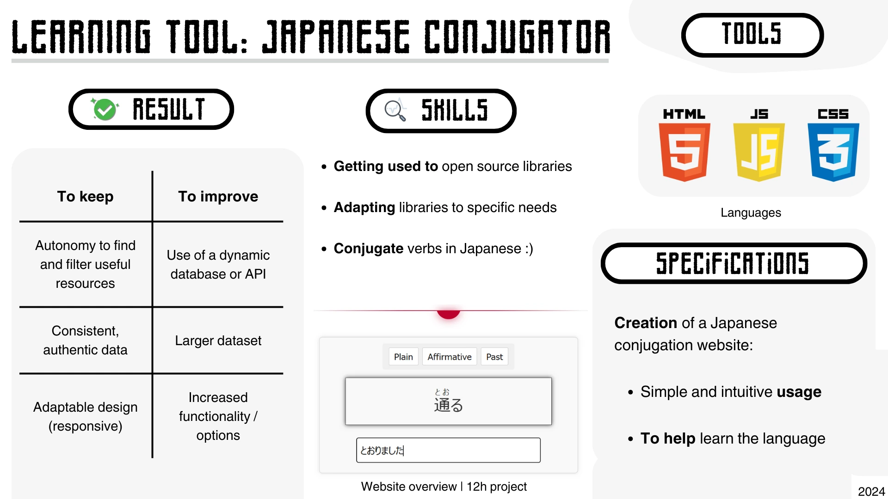

Aspiring developer in human languages and AI at the service of users
Who am I
My name is Hugo, and I am an aspiring AI developer currently refining my skills at Bordeaux University's IUT. Passionate about combining artificial intelligence with human languages, I am actively building a strong foundation in computer science, constantly learning and applying new technologies to shape my future career as an AI professional.
Skills
Database
Relational: design relational databases by creating MCD, MLD, and MPD, and writing optimised SQL queries.
Object: work with object-oriented databases, mapping objects to schemas and handling complex data structures.
SGBD: SQL Server, MySQL, Oracle
Project management
Clean code: write concise, well-documented code and apply validation techniques.
V-project management: follow V-model steps to ensure structured development and efficient testing.
Agile methods (SCRUM): collaborate effectively in iterative sprints to deliver value progressively.
Software engineering tools (AGL): Win'design
Software deployment tools
Github Actions: prepare workflows for efficient deployment automation and integration.
Gitlab: manage repositories with clear versioning, detailed README files, and collaborative branching strategies.
Frameworks
Bootstrap: create responsive websites quickly and efficiently.
Symfony: use for structured development and secure database interactions.
Continuous integration / CICD
Formal methods: apply formal verification techniques to ensure software consistency.
Software quality: use best practices to maintain high code quality through continuous integration and regular reviews.
Testing: fundamentals and automation.
Modeling languages and methods
Entity association diagram: design clear entity relationships to visualize and validate project structure before development.
UML: model complex systems to represent class inheritance, abstraction, polymorphism, and user interaction scenarios (scnenarii).
Programming languages
System: C, C#
Object-oriented: C#, Java
Web development: HTML/CSS, Java, PHP, JavaScript
Scripting/Automation: Bash, PHP
Development tools
Visual Studio Code
ECLIPSE and Visual Studio
Netbeans
JetBrains Suite: CLion, PyCharm, PhpStorm
Object-oriented programming
Programming and design paradigms: apply key OOP principles (inheritance, encapsulation, polymorphism, abstraction) to design efficient, reusable code.
MVC architecture: use Model-View-Controller pattern to separate data, user interface, and control logic for better project organization.
Design patterns: implement common design patterns (like Singleton, Factory, Observer) to solve recurring design problems.
Networks
Definition and use of protocols: configure and manage DNS, DHCP protocols.
HTTP/HTTPS: understand and implement HTTP and HTTPS requests and responses.
Routing: TCP/IP
OSI Model: apply to analyze and design network communcation layers.
Operating systems
UNIX (Linux): Ubuntu, Mint
Windows: 7, 8.1, 10, 11
Tests/Test methods
JUnit: write and run unit tests for Java applications.
Test set design methodology: develop clear and structured test scenarios.
Static analysis and proofs: verify program correctness using format methods.
Projects
Japanese Conjugator

This was my first project, combining two passions: Japanese and JavaScript programming. I created the Japanese Conjugator Website to help others and myself in my japanese conjugation studies. This experience helped me explore open-source GitHub projects, get familiar with their documentation, and integrate external libraries into my work.
Using the JavaFX library (i.e. in Java), I implemented the game, its rules and graphics. The principle is simple: it's a classic labyrinth game in which the aim is to reach the exit while avoiding the enemies lurking between the floors. My main objective in this project was to learn how to differentiate between the concrete part of the code, and its graphic part (sprites).
Anhydralgo
My very first team project under real conditions, both in terms of deliverables and meeting deadlines. I have been the coordinator to ensure agreement and synchronization of the progress of tasks, while ensuring the implementation of automated statistical graphics generation.
This project was divided into two parts: first, to install a network and then write a tutorial on how to use it. For the installation, I chose with my binôme to deploy its use through the office suite NextCloud offering a wide variety of tools to the user. I have done some of the configuration of these tools. For the writing of the tutorial, this one describes how to reproduce the steps of the installation we have conducted. I mainly wrote the English version of the tutorial.
Graffiting The Streets
This project consists of creating the front side of a website by applying an appropriate interface. I have created personas (main, secondary and anti-personas) in order to effectively target the type of visitors that my site should accommodate. I also adapted this site to the respect of Responsive Design development.
Towa AI
My very first experience of applying an AI in a hands-on immersive simulation is in this project. In a competitive context, I developed a min-max AI adapted to the trend of play and strategies of other players' AI.
Contact
Feel free to reach out to me via the following channels: